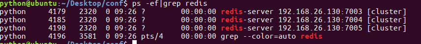

配置机器2
- 在演示中，172.16.179.131为当前ubuntu机器的ip
- 在172.16.179.131上进⼊Desktop⽬录，创建conf⽬录
在conf⽬录下创建⽂件7003.conf，编辑内容如下
port 7003 bind 172.16.179.131 daemonize yes pidfile 7003.pid cluster-enabled yes cluster-config-file 7003_node.conf cluster-node-timeout 15000 appendonly yes在conf⽬录下创建⽂件7004.conf，编辑内容如下
port 7004 bind 172.16.179.131 daemonize yes pidfile 7004.pid cluster-enabled yes cluster-config-file 7004_node.conf cluster-node-timeout 15000 appendonly yes在conf⽬录下创建⽂件7005.conf，编辑内容如下
port 7005 bind 172.16.179.131 daemonize yes pidfile 7005.pid cluster-enabled yes cluster-config-file 7005_node.conf cluster-node-timeout 15000 appendonly yes总结：三个⽂件的配置区别在port、pidfile、cluster-config-file三项
使⽤配置⽂件启动redis服务
redis-server 7003.conf redis-server 7004.conf redis-server 7005.conf查看进程如下图 